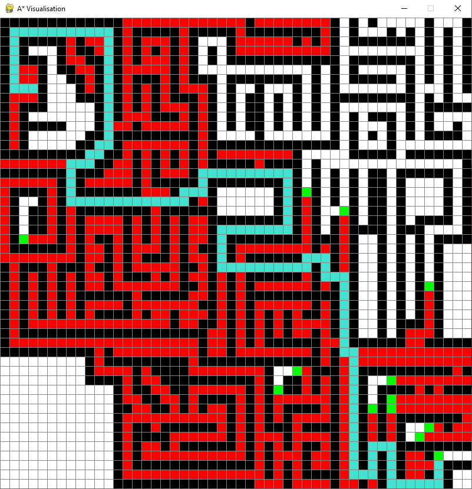

In this project, I learned to create a Python implementation of the A* Pathfinding algorithm.
Asides from being among possibly the most commonly cited programming examples ever, A* is a highly efficient pathfinding algorithm which many
programmers turn to due to it's incredible efficiency (caused by its best-first approach rather than brute force).
Other pathfinding algorithms do exist - notably Dijkstra's Shortest Path, but I chose to work with A* for this project as it is
a more optimal search algorithm. A* is simply an expansion on Dijkstra's algorithm which adds a heuristic function to help navigate
the search towards the goal more efficiently, rather than purely based on the weights of the paths.
On the right, you can see a screenshot of what my visualisation looks like on a solved puzzle. I used various colours to depict
the functions each cell was taking. For example, the red squares are squares that are no longer being considered by the algorithm,
green cells are cells that are in the open set, awaiting consideration. As a path has been found, the blue line indicates the shortest
path from A -> B as found by the algorithm. The start and end points are hidden but are coloured orange and purple respectively. All of the weights
of edges in the network are 1, as all cells are of equal size.
This project is only dependent on PyGame, and a Python 3.8+ install.
To take a look at the code for yourself, go check out the GitHub Repository for this project.

In this project I used a recursive algorithm in C++ to solve sudoku puzzles.
Sudokus are an all-time classic puzzle. They were invented in Japan in the 80's and have remained
resistant to the constantly changing media to the point where they are still finding a way into our daily newspapers.
Sudokus are quite complex puzzles, with deceptively simple rules which can often mess up people's solutions
without them realising. This property, however, makes them perfect for a programming example project.
Using a recursive back-tracking algorithm which I coded in C++, I was able to make an effective Sudoku solver
that runs from my command line. The algorithm works by going through each cell sequentially and attempting each
possibiity, this is known as a depth-first search. For other applications, these depth-first, brute-force
algorithms are not as appealing due to their inefficiency, but due to the fact that Sudokus are algorithmically
less complicated to develop for than most applications, this approach is most often used. The algorithm is
also beautifully simple, and guarantees a solution on any valid sudoku.
It works by placing the number 1 in the first empty cell, and checking if that cell is allowed to hold a 1, if it
is it moves on to the next cell, sets it to 1 and checks for violations. If it is not allowed to hold a 1, it increments
to 2, and so on. If a cell is found where none of the numbers 0->9 are allowed, the algorithm goes back a cell and
increments its value by one. This continues until the Sudoku is solved.
To take a look at the code for yourself, go check out the GitHub Repository for this project.